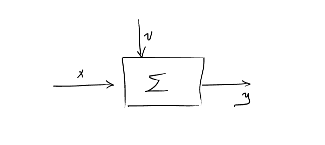

Διάλεξη 2: Ευστάθεια με διαγωνιοποίηση
Table of Contents
Εισαγωγή
- Γιατί εξετάζουμε γραμμικά συστήματα ενώ όλα τα πραγματικά είναι μη γραμμικά;
- Προσομοίωση/προσέγγιση μη γραμμικού συστήματος σε μια αυστηρά ορισμένη περιοχή λειτουργίας.
- Καλύτερη αίσθηση ελέγχου. Ουσιαστικά αντιλαμβανόμαστε καλύτερα τα γραμμικά συστήματα.
- Ευκολότερη ερευνητική μελέτη: όσο πιο απλό είναι το εξεταζόμενο αντικείμενο τόσο πιο εύκολα μπορεί να περιγραφεί και να αναλυθεί από τους όποιους μελετητές.
Εξέταση γραμμικής φύσεως συστήματος

Figure 1: Βασικό και καλά σχεδιάγραμμα του εξεταζόμενου συστήματος.
Έστω το δοθέν σύστημα
\begin{equation} \label{eq:1} {\dot x} = f(x,u) \end{equation} \begin{equation} \label{eq:2} y = h(x,u) \end{equation}όπου έχουμε \(x\in {\mathbb R}^n, u\in {\mathbb R}^m, y\in {\mathbb R}^p\)
Το σύστημα θα λέγεται γραμμικό (σε κάποια περιοχή) αν μπορεί να περιγραφεί από εξισώσεις της μορφής:
\begin{align} \label{eq:3} {\dot x} &= Ax + Bu \\ y &= Cx + Du \end{align}Ουσιαστικά η συγκεκριμένη ενότητα έχει αναλυθεί (μερικώς) στα μαθήματα των κυκλωμάτων: Αρχές της ομογένειας και της επαλληλίας …
Πιο αυστηρά, προκειμένου το σύστημα γραμμικό θα πρέπει να ισχύουν οι τρεις παρακάτω ιδιότητες:
Ιδιότητα 1
Όπου ο συμβολισμός που υιοθετείται στις \(\ref{eq:4}\) \(\ref{eq:6}\) \(\ref{eq:7}\)
\begin{equation} \label{eq:5} y(\text{time};\text{initial value}, \text{input value}) \end{equation}η ισοδύναμα:
\begin{equation} \label{eq:8} y(t; x,u) \end{equation}Ιδιότητα 2
Ιδιότητα 3
Χρονική μεταβλητότητα.
Για είσοδο \(u\) την βηματική, στην αρχή \(u(t)\) και κατόπιν \(u(t-t_0)\), ένα σύστημα θα λέγεται χρονικά αμετάβλητο αν:
- Οι πίνακες που εμφανίζονται στις εξισώσεις \(\ref{eq:3}\) να μην έχουν άμεση εξάρτηση από τον χρόνο
- Η έξοδος του συστήματος στις δύο περιπτώσεις που γράφτηκαν στο εισαγωγικό κομμάτι της παραγράφου να είναι πανομοιότυπες μα χρονικά μετατοπισμένες (ως αναμενόμενο)
Παράδειγμα για λύση εισόδου?
Θέτοντας \(u=0\) στο σύστημα της \(\ref{eq:3}\):
\begin{equation} \label{eq:9} {\dot x} = Ax, x(0) = x_0 \end{equation}Για \({\dot x}= ax\) γνωρίζουμε πως η ομογενής λύση:
\begin{equation} \label{eq:10} x(t) = e^{at}x_0, \forall t\geq 0, a \in {\mathbb R} \end{equation}Προκειμένου να γενικεύσουμε την παραπάνω λύση (\(\ref{eq:10}\)), ορίζουμε τον πίνακα:
\begin{align} \label{eq:11} e^{\mathcal{X}} &= I + \mathcal{X} + \frac{1}{2}\mathcal{X}^2 + \frac{1}{3!}\mathcal{X}^3 + \cdots =\\ &= \sum^{\infty}_{k=0} \frac{1}{k!} \mathcal{X}^k \end{align}Εκ της παραπάνω σχέσης, λοιπόν:
\begin{equation} \label{eq:12} e^{At} = \cdots = \sum^{\infty}_{k=0} \frac{1}{k!} A^kt^k \end{equation}Ο πίνακας \(e^{At}\) ονομάζεται πίνακας μετάβασης και ο υπολογισμός του είναι προαπαιτούμενο για την εύρεση της λύσης.
οπου παραγωγίζοντας την \(\ref{eq:12}\):
\begin{equation} \label{eq:13} \frac{d{e^{At}}}{d{t}} = \cdots \stackrel{\text{diy}}{=} Ae^{At} \end{equation}Επομένως καταλήγουμε ότι στην απαιτούμενη εξίσωση, την \(\ref{eq:9}\), δείχνοντας οτι το \(e^{At}\) αποτελεί λύση του συστήματος.
Ειδική περίπτωση υπολογισμού πίνακα μετάβασης example
Δοθέντος συστήματος:
\begin{equation} \label{eq:15} {\dot x} = \begin{bmatrix} 0 & 1\\ 0 & 0 \end{bmatrix}x + \begin{bmatrix} 0\\1 \end{bmatrix} u \end{equation}Ζητείται να υπολογιστεί ο πίνακας μετάβασης.
Σε αυτή την φάση όλα και όλα αυτά που έχουμε είναι ο \(\ref{eq:12}\). Παρατηρούμε ότι \(A^2=0\), λόγω της δομής του πίνακα. Επομένως τελικά έχουμε:
\begin{equation} \label{eq:17} e^{At} = I + At = \begin{bmatrix} 1 & t\\0 &1 \end{bmatrix} \end{equation}και εξ αυτού:
\begin{equation} \label{eq:18} \vec{y} = e^{At}x_0 = \begin{bmatrix} 1&t\\0&1 \end{bmatrix} \begin{bmatrix} x_1(0)\\x_2(0) \end{bmatrix} = \begin{bmatrix} x_1(0) + tx_2(0)\\x_2(0) \end{bmatrix} \end{equation}Όπως προκύπτει από αυτές τις εξισώσεις, το σύστημα θα είναι ασταθές, καθώς χωρίς είσοδο ελέγχου παρατηρούμε ότι η είσοδος απειρίζεται.
Αυτό το παράδειγμα είναι too good to be true για να είναι εφαρμόσιμο σε μεγαλο αριθμό περιπτώσεων. Ο μηδενισμός ορισμένης δύναμης του \(A\), αν και μπορεί να τύχει, δεν είναι δεδομένος.
Γενικός τρόπος υπολογισμού \(e^{At}\) example
Δουλεύοντας στην \(\ref{eq:9}\)
\begin{align} \label{eq:19} \stackrel{\text{Laplace}}{\Rightarrow} sX(s) - X(0) &= AX(s)\iff\\ (sI -A)X(s) &= X(0)\\ X(s) &= (sI-A)^{-1}X(0)\\ \Rightarrow x(t)&= \mathcal{L}^{-1} \{ (SI-A)^{-1}\} x(0) \end{align}Η οποία σχέση αποκτά ακόμα μεγαλύτερη σημασία όταν συνδυάζεται με την (\(\ref{eq:10}\)), όπως φαίνεται στο παράδειγμα:
Δοθέντος πίνακα \(A\):
\begin{equation} \label{eq:21} A = \begin{bmatrix} 0 & 1\\\ -2 & -3 \end{bmatrix} \Rightarrow \cdots \Rightarrow X(s) = \frac{1}{s^2+3s+2} \begin{bmatrix} s+3 & 1\\ -2 & 5 \end{bmatrix} \end{equation}όπου τελικά προκύπτει:
\begin{equation} \label{eq:22} e^{At} = \mathcal{L}^{-1} \{ (SI -A)^{-1} \} = \begin{bmatrix} 2e^{-t}-e^{-2t} & e^{-t}-e^{-2t}\\ -2e^{-t}+2e^{-2t} & -e^{-t} + 2 e^{-2t} \end{bmatrix} \end{equation}Ακόμα ο πίνακας μετάβασης βοηθάει την εξέταση της ευστάθειας του συστήματος. Θα πρέπει κάθε στοιχείο του πίνακα να μην απειρίζει όταν το \(t\to \infty\)
Μερικές ακόμα ειδικές περιπτώσεις:
Α διαγώνιος
Στην ειδική περίπτωση όπου:
\begin{equation} \label{eq:24} A = \begin{bmatrix} a_{1} & 0 & 0 \\ 0 & a_2 &0\\ 0 & 0 & a_3 \end{bmatrix} \end{equation}Καταλήγομε ότι
\begin{equation} \label{eq:25} e^{At} = \begin{bmatrix} e^{a_1t} &0 &0\\ 0 & e^{a_2t} &0\\ 0 & 0 & \cdots \end{bmatrix} \end{equation}Αν και δεν είναι εφαρμόσιμος σε πολλές περιπτώσεις κατευθείαν, αυτή η ιδιότητα έρχεται χρήσιμη όταν προχωράμε στην διαγωνιοποίηση ενός συστήματος.
Διαγωνοποίηση συστήματος.
Εστω ότι σύστημα όπως αυτό φαίνεται στην \(\ref{eq:9}\), και \(A\) πίνακας με ιδιοτιμές πολλαπλότητας 1.
Τότε υπάρχει πίνακας \(T\), αντιστρέψιμος, τέτοιος ώστε:
\begin{equation} \label{eq:26} A^{\textasciitilde} = T^{-1}AT \end{equation}Έτσι με δεδομένο τον πίνακα \(T\)1 μπορούμε να κάνουμε κατάλληλη αντικατάσταση: (νέα μεταβλητή κατάστασης \(z\), απο μας ορισμένη σαν)
\begin{equation} \label{eq:27} x = Tz \Rightarrow z = T^{-1}x \end{equation}όπου
\begin{align*} {\dot z} &= T^{-1} {\dot x}\\ &= T^{-1}A x\\ &= T^{-1}A T z\\ &= (T^{-1}A T) z\\ &= A^{\textasciitilde}z \end{align*}Έχοντας, κατ’ αυτόν τον τρόπο διαγωνοποιήσει το σύστημα
Αποδεικνύεται (όπως υπάρχει στον Strang2), ότι ο \(T\) είναι ο πίνακας του οποίου οι στήλες είναι τα ιδιοδιανύσματα του \(A\). Αντίστοιχα αποδεικνύεται ότι ο \(T^{-1}\) υπάρχει πάντοτε καθώς τα διανύσματα εξ ορισμού γραμμικά ανεξάρτητα και αποτελούν, στο σύνολο τους, βάση του νδιάστατου χώρου.
Ειδική περίπτωση όπου αρχική τιμή ιδιοδιάνυσμα
Αν έχουμε:
\begin{equation} \label{eq:28} x(t) = e^{At}x(0) = e^{At}v \end{equation}όπου \(v\) ιδιοδιάνυσμα και \(\lambda\) η αντίστοιχη ιδιοτιμή:
\begin{equation} \label{eq:29} x(t) = (I + At + A^2t^2 +\cdots) v = \cdots = v(1+\lambda t + \lambda^2 t^2 + \cdots) = e^{\lambda t}v \end{equation}Αυτή η έκφραση ονομάζεται ρυθμός (όλο το \(e^{\lambda t}v\)). Ο γραμμικός συνδυασμός όλων των ρυθμών (για κάθε ιδιοδιάνυσμα και ιδιοτιμή) θα μου δώσει την γενική μορφή της ομογενούς λύσης.
Έτσι καταλαβαίνουμε πως η μορφή της λύσης (σύγκλιση απόκλιση, παραμονή σε σταθερή τιμή) καθορίζεται από τις ιδιοτιμές.
Συνδυάζοντας το με τις προηγούμενες διαλέξεις (όπου εξετάζαμε τις ιδιοτιμές για να καθορίσουμε την ευστάθεια) - βλέπουμε ουσιαστικά γιατί η θετική η αρνητική πραγματική φύση των ιδιοτιμών είναι καθοριστική των ιδιοτήτων του συστήματος.
Footnotes:
Πίνακας μετασχηματισμού